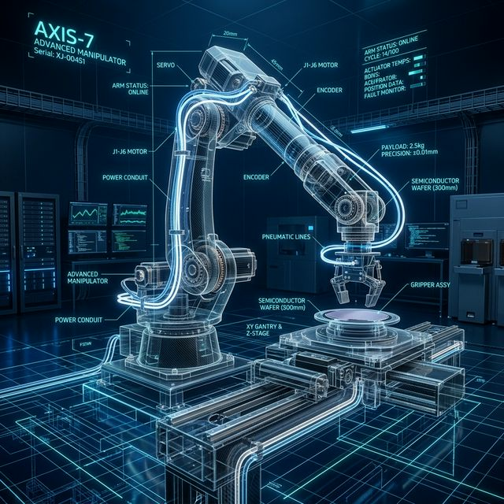

APPLIED MATERIALS KOREA
모두가 불가능하다고 여기는 일을
현실로 만듭니다.
반도체 장비의 무결점 가동을 이끄는 집요한 문제 해결사,
동양미래대학교 로봇소프트웨어과 예비 장비 테크니션 유현신입니다.
SCROLL
유지보수 엔지니어의 핵심 역량
집요한 탐구로 완성하는
'시스템 통합 역량'
고도로 복잡한 반도체 장비의 오류 발생 시, 단편적인 증상에 머물지 않고 기계·전기·소프트웨어의 본질적 원인을 끝까지 파고들어 문제를 해결합니다.
실전 중심의
'성과 시각화 및 문서화 능력'
교대조 간의 인수인계와 트러블슈팅 이력이 생명인 유지보수 업무에서, 복잡한 실무 과정을 누구나 한눈에 이해하도록 시각화하여 'One Team' 협업을 이끕니다.
피드백을 동력으로 삼는
'사용자 중심의 성장 마인드'
끊임없이 진화하는 반도체 신기술 앞에서도, 선배 엔지니어와 현장의 피드백을 적극 수용하여 유지보수 프로세스를 지속적으로 개선합니다.
탄탄한 융합 기초 체력
기계 도면 해독
상세보기
SolidWorks를 활용한 3D 형상 모델링, 부품 조립 및 상호 간섭 체크 능력을 통해 장비의 기계적 구조와 조립 메커니즘을 완벽히 이해합니다.
전장부 트러블슈팅
상세보기
복잡한 장비 내부의 배선 전장 도면을 완벽히 해독하여, 단선 및 절연 불량 등 전기적 결함 발생 시 신속하고 정확한 트러블슈팅을 수행합니다.
PLC 프로그래밍
상세보기
LS산전 및 미쓰비시 PLC를 활용하여 산업용 자동화 라인의 시퀀스 제어 로직을 설계하고, HMI 연동을 통한 실시간 모니터링 시스템 구축 경험이 있습니다.
시스템 제어 및 구동
상세보기
오실로스코프와 멀티미터를 활용하여 RLC 부하 회로의 전압/전류 파형을 분석하고, 이상 유무를 검증할 수 있는 계측 능력을 갖추었습니다.
전기이론 및 실험
상세보기
회로이론의 기본 법칙(KCL, KVL)을 숙지하고, 실제 회로 구성을 통한 전압/전류 측정 실험을 통해 전장 도면 분석 및 회로 트러블슈팅의 기초를 다졌습니다.
STAR 기법 기반 실전 증명
캡스톤디자인 및 전공동아리(SMART) 통합 제어 프로젝트
Situation & Task
로봇/자동화 시스템(EV3 라인 트래킹 시스템) 구동 중 원인 미상의 펌웨어 동작 오류와 기계 부품 간의 조립 간섭으로 인한 구동 불안정 문제 발생.
Action
오실로스코프로 회로의 비정상 신호를 추적하고, SolidWorks를 이용해 가상 조립 시뮬레이션으로 기계적 간섭 오류를 수정했으며, 시뮬레이터를 통해 펌웨어 동작 조건을 최적화하여 시스템을 재통합함.
Result
시스템 에러율을 0%로 낮추고, 2D 도면, BOM, 회로도 등 해결 과정의 모든 히스토리를 시각화 및 문서화하여 팀원들과 성공적인 결과물 도출.

자유게시판
최근 게시물
등록된 게시물이 없습니다. 첫 번째 의견을 남겨보세요!
Ready to Innovate Together?
AMK의 미래 지향적 가치에 기여할 준비가 되었습니다.
oets39@gmail.com
010-1234-9876